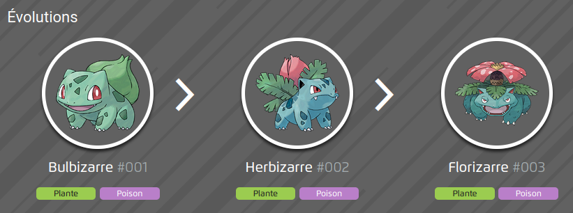

Bulbizarre est un petit quadrupède vert avec une tête large. Il porte un bulbe sur son dos. Ce dernier lui sert également d'organe de stockage, puisqu’on rapporte notamment qu’en période de sécheresse, il peut survivre plusieurs jours sans manger grâce à l’énergie qui y est accumulée. Il a des taches foncées sur le corps faisant penser à un batracien. Son bulbe grandit en permanence en absorbant les rayons du soleil, et lorsque le poids du bulbe sera trop grand et empêchera Bulbizarre de se dresser sur ses deux pattes arrière, cela signifiera que son évolution en Herbizarre est proche.
Bulbizarre 001